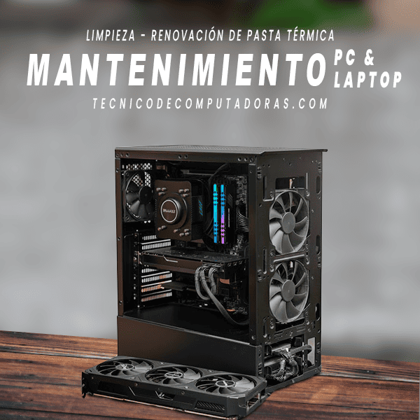
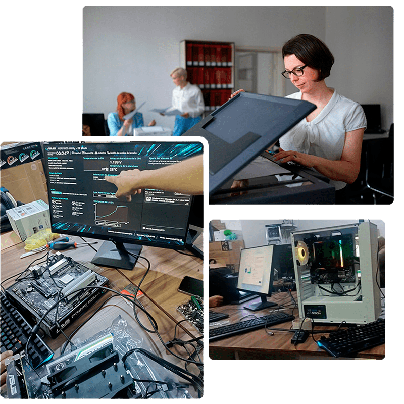

Venta y soporte de computadoras
Soporte Técnico de Computadoras a Domicilio y Oficinas
Visitas y diagnóstico desde S/29.00 soles. (Según Distrito)


Aceptamos pago con:
Visitas y diagnósticos desde S/ 29.00 soles (según distrito). Atendemos en menos de 24 horas.
Soporte técnico de computadoras a domicilio en Lima
Distritos donde brindamos servicio
- Surco
- Surquillo
- Chorrillos
- Barranco
- Miraflores
- Lince
- San Isidro
- San Borja
¿Problemas con tu computadora o laptop?
Solicita soporte ahora- - La computadora no da imagen
- - La laptop funciona muy lenta
- - El equipo se apaga solo
- - Problemas de sobrecalentamiento
- - PC no reconoce disco duro

¿Eres una empresa?
Cotiza hoy tus servicios y productos con un asesor
Laptops, cpu, monitores, impresoras y accesorios de computo.
--- Escríbenos por whatsApp en un solo paso.
Soporte Para PC o Laptops
Servicios a domicilio y oficinas a cotizar.
Productos Memorias ram, antivirus originales, discos sólidos, laptops, impresoras entre otros.

Soporte ténico de computadoras
Soporte Técnico a Domicilio | Configuración de Impresoras
Ofrecemos servicios de soporte técnico de computadoras a domicilio en diferentes distrito de Lima,
realizamos diagnósticos de tus equipos de computo como pc o laptop a domicilio, cambios de discos duros, aumento de memoria ram,
formateo y reinstalación de sistema operativos como Windows 10 / Windows 11.
Soporte técnico para configuración de impresoras con conectividad Wifi, soporte en instalación de repetidores Wifi,
soporte a domicilio ensamblaje de pc de escritorio.
Otros servicio de soporte que te ofrecemos en nuestro taller
- Cambios de pantalla
- Cambios de teclados
- Reparación de bisagras de laptops
Podemos recoger tu equipo desde tu domicilio, el precio de este servicio se cotiza segun tu distrito.

Marcas que comercializamos
Lo que tus equipos necesitan
Nuestros Productos
Venta de accesorios de computo, laptops, cpu, impresoras, monitores entre otros.
Puede cotizar nuestros servicios por whatsapp 972 186 481


Disco sólido 240gb
S/ 170.00 Instalación a domicilio S/50.00
Disco sólido 960gb
S/ 350.00 Instalación a domicilio S/50.00
Disco sólido 480gb
S/ 230.00 Instalación a domicilio S/50.00
Antivirus Kaspersky 1pc
S/ 70.00 Instalación remota gratisNuestros clientes opinan
Te ofrecemos
Servicios para complementar tus proyectos
Puedes consultar por estos servicios
- Desarrollo de Sitios Web
- Desarrollo de Ecommerce
- Capacitaciones de Wordpress
- Capacitaciones Privadas de Offices

 Llamar Ahora
Llamar Ahora